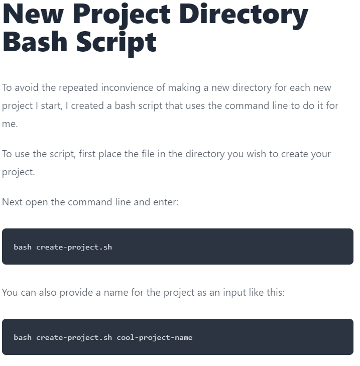
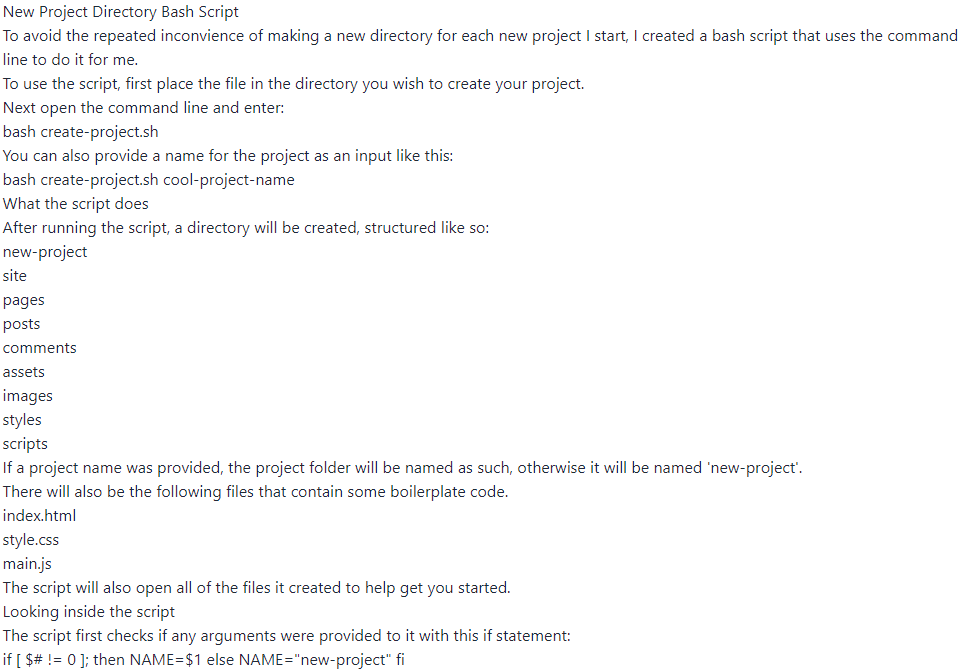

Comm429 Blog 2
Some (maybe) Common Mistakes with configuring 11ty and Tailwind to show markdown files
This is a short guide on how to use 11ty and tailwind to display a pre-existing markdown file.
To show my blog and other things, I created a static site using 11ty and Tailwind CSS.
While the site looked nice, when I tried to put up my pre-existing blog post, nothing looked right!
Here is what the blog post is supposed to look like:

And here is what I saw:

As you can see, its just plain old text. No headings, no code-blocks.
To fix this I did some trouble shooting.
Tailwind overrides my defaults
The main issue comes from Tailwind. As it turned out, the default styles for markdown were overridden.
For a new file, this might be ok, you could just write it using Tailwind styles. But, in the case of an old file, re-writing my blog post would be tedious.
This is especially the case for someone who is moving their entire blog from another site to a Tailwind site, while re-writing one post maybe tolerable, re-writing years of blogging is not.
So, what's the fix?
Fortunately, other people did the complaining for me, and Tailwind released a plugin to allow the default styles.
The plugin is called Tailwind CSS Typeography. For additional info about it, click the link here.
To import the plugin you will need to open your tailwind configuration file, 'tailwind.config.js'.
In the file, go to the pluins array (or create one if its not there), and add the plugin like this:
plugins: [
...,
require('@tailwindcss/typography')
],
The plugin adds a new set of 'prose' classes that will make any vanilla markdown files look as they were intended to.
To apply one of the classes, simply go the layout you are using for your blog posts and add a div tag around the content block like so:
<div class="prose lg:prose-xl">
{{ content | safe }}
</div>
With that your markdown file should be looking mostly normal.
Mostly? Thats right, there is one more issue.
The code-blocks still aren't working!
If you're using the default 11ty settings, the code-blocks in your markdown files still won't look right.
By default, 11ty disables indented code-blocks. This is because the code-block feature can mess with retrieved content or shortcode that happens to contain indents.
So, what's the fix?
Fortunately, this is easy to re-enable. The method I'm using is found here in the 11ty docs.
To do so, you will need to go to your 'eleventy.js' file and use 'ammendLibrary' like so:
module.exports = function(eleventyConfig){
eleventyConfig.amendLibrary("md", (mdLib) => mdLib.enable("code"));
}
With this, your code-blocks should now re-appear and your markdown files should look like they do on any other site.